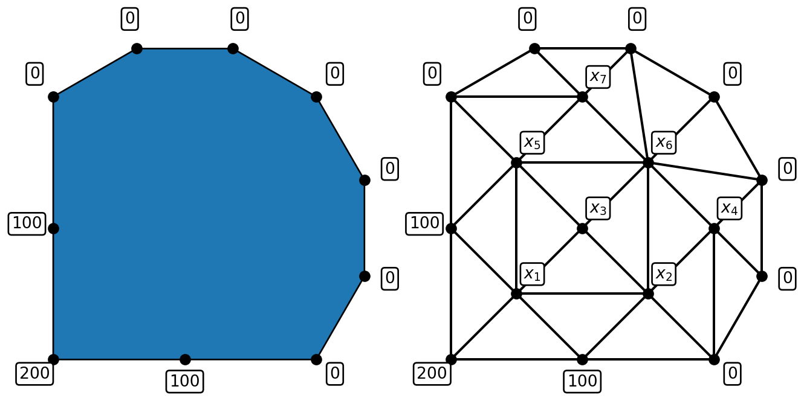
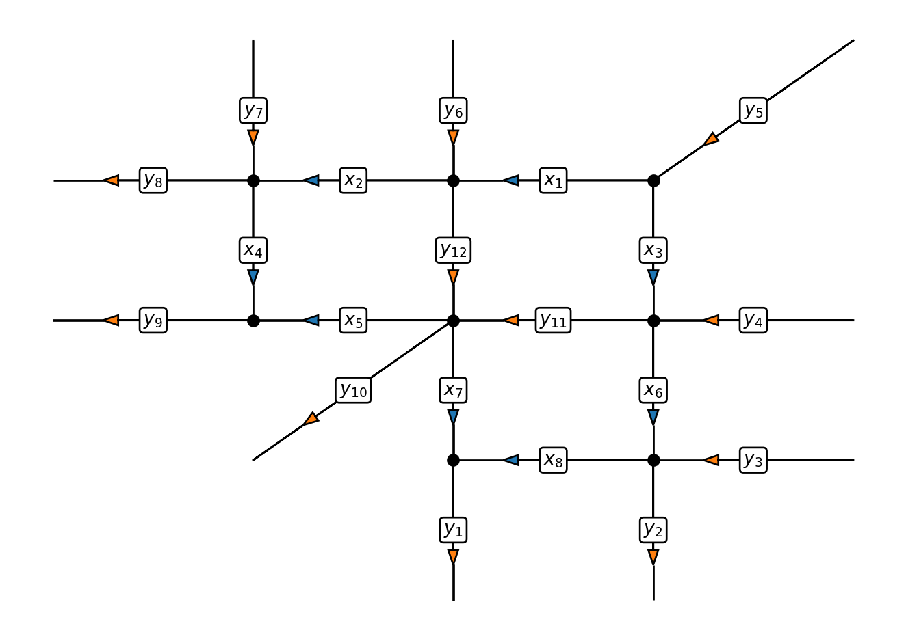

Trying different approaches for problem size 100
Approach 1 - inverting the matrix and applying the inverse. Time = 0.0003445148468017578
Approach 2 - solving the system of linear equations. Time = 0.0001468658447265625
Approach 2 is faster by a factor of 2.345779220779221
Trying different approaches for problem size 10000
Approach 1 - inverting the matrix and applying the inverse. Time = 61.687047481536865
Approach 2 - solving the system of linear equations. Time = 15.645638942718506
Approach 2 is faster by a factor of 3.9427630733001204Introduction
1 Introduction to systems of linear equations
The basic problem is to solve a set of \(n\) linear equations for \(n\) unknown values \(x_j\), \(j = 1, \ldots, n\).
Notation:
\[ \begin{aligned} \text{Equation 1:} && a_{11} x_1 + a_{12} x_2 + a_{13} x_3 + \cdots + a_{1n} x_n & = b_1 \\ \text{Equation 2:} && a_{21} x_1 + a_{22} x_2 + a_{23} x_3 + \cdots + a_{2n} x_n & = b_2 \\ \vdots \\ \text{Equation i:} && a_{i1} x_1 + a_{i2} x_2 + a_{i3} x_3 + \cdots + a_{in} x_n & = b_i \\ \vdots \\ \text{Equation n:} && a_{n1} x_1 + a_{n2} x_2 + a_{n3} x_3 + \cdots + a_{nn} x_n & = b_n. \end{aligned} \]
Notes:
The values \(a_{ij}\) are known as coefficients.
The right hand side values \(b_i\) are known and are given to you as part of the problem.
\(x_1, x_2, x_3, \ldots, x_n\) are not known and are what you need to find to solve the problem.
Many computational algorithms require the solution of linear equations, e.g. in fields such as
- Scientific computation;
- Network design and optimisation;
- Graphics and visualisation;
- Machine learning.
TODO precise examples
Typically these systems are very large (\(n \approx 10^9\)).
It is therefore important that this problem can be solved
- accurately: we are allowed to make small errors but not big errors;
- efficiently: we need to find the answer quickly;
- reliably: we need to know that our algorithm will give us an answer that we are happy with.
Remark
One way to solve a system of linear equations is to compute the inverse of \(A\), \(A^{-1}\), directly, then the solution is found through matrix multiplication: \(\vec{x} = A^{-1} \vec{b}\). This turns out to be an inefficient approach and we can do better with specialised algorithms.
1.0.1 General matrix-vector form
Solve the system of equations given by
\[ \begin{pmatrix} a_{11} & a_{12} & a_{13} & \cdots & a_{1n} \\ a_{21} & a_{22} & a_{23} & \cdots & a_{2n} \\ a_{31} & a_{32} & a_{33} & \cdots & a_{3n} \\ \vdots & \vdots & \vdots & & \vdots \\ a_{n1} & a_{n2} & a_{n3} & \cdots & a_{nn} \end{pmatrix} \begin{pmatrix} x_1 \\ x_2 \\ x_3 \\ \vdots \\ x_n \end{pmatrix} = \begin{pmatrix} b_1 \\ b_2 \\ b_3 \\ \vdots \\ b_n \end{pmatrix}. \]
In other words, given an \(n \times n\) matrix \(A\) and an \(n\)-vector \(\vec{b}\), find the \(n\)-vector \(\vec{x}\) which satisfies \[ A \vec{x} = \vec{b}. \]
Example 1: Temperature in a sealed room
Suppose we wish to estimate the temperature distribution inside an object:

We can place a network of points inside the object and use the following model: the temperature at each interior point is the average of its neighbours.
This example leads to the system:
\[ \begin{pmatrix} 1 & -1/6 & -1/6 & 0 & -1/6 & 0 & 0 \\ -1/6 & 1 & -1/6 & -1/6 & 0 & -1/6 & 0 \\ -1/4 & -1/4 & 1 & 0 & -1/4 & -1/4 & 0 \\ 0 & -1/5 & 0 & 1 & 0 & -1/5 & 0 \\ -1/6 & 0 & -1/6 & 0 & 1 & -1/6 & -1/6 \\ 0 & -1/8 & -1/8 & -1/8 & -1/8 & 1 & -1/8 \\ 0 & 0 & 0 & 0 & -1/5 & -1/5 & 1 \end{pmatrix} \begin{pmatrix} x_1 \\ x_2 \\ x_3 \\ x_4 \\ x_5 \\ x_6 \\ x_7 \end{pmatrix} = \begin{pmatrix} 400/6 \\ 100/6 \\ 0 \\ 0 \\ 100/6 \\ 0 \\ 0 \end{pmatrix}. \]
Example 2: Traffic network
Suppose we wish to monitor the flow of traffic in a city centre:

As the above example shows, it is not necessary to monitor at every single road. If we know all of the \(y\) values we can calculate the \(x\) values!
This example leads to the system:
\[ \begin{pmatrix} 1 & 0 & 1 & 0 & 0 & 0 & 0 & 0 \\ 1 & -1 & 0 & 0 & 0 & 0 & 0 & 0 \\ 0 & 1 & 0 & -1 & 0 & 0 & 0 & 0 \\ 0 & 0 & 1 & 0 & 0 & -1 & 0 & 0 \\ 0 & 0 & 0 & 0 & 1 & 0 & 1 & 0 \\ 0 & 0 & 0 & 1 & 1 & 0 & 0 & 0 \\ 0 & 0 & 0 & 0 & 0 & 1 & 0 & -1 \\ 0 & 0 & 0 & 0 & 0 & 0 & 1 & 1 \end{pmatrix} \begin{pmatrix} x_1 \\ x_2 \\ x_3 \\ x_4 \\ x_5 \\ x_6 \\ x_7 \\ x_8 \end{pmatrix} = \begin{pmatrix} y_5 \\ y_{12} - y_6 \\ y_8 - y_7 \\ y_{11} - y_4 \\ y_{11} + y_{12} - y_{10} \\ y_9 \\ y_2 - y_3 \\ y_1 \end{pmatrix}. \]
1.1 Special types of matrices
The general matrix \(A\) before the examples is known as a full matrix: any of its components \(a_{ij}\) might be nonzero.
Almost always the problem being solved leads to a matrix with a particular structure of entries: Some entries may be known to be zero. If this is the case then it is often possible to use this knowledge to improve the efficiency of the algorithm (in terms of both speed and/or storage).
Example 1: Triangular matrix
One common (and important) structure takes the form
\[ \begin{pmatrix} a_{11} & 0 & 0 & \cdots & 0 \\ a_{21} & a_{22} & 0 & \cdots & 0 \\ a_{31} & a_{32} & a_{33} & \cdots & 0 \\ \vdots & \vdots & \vdots & \ddots & \vdots \\ a_{n1} & a_{n2} & a_{n3} & \cdots & a_{nn} \end{pmatrix} \begin{pmatrix} x_1 \\ x_2 \\ x_3 \\ \vdots \\ x_n \end{pmatrix} = \begin{pmatrix} b_1 \\ b_2 \\ b_3 \\ \vdots \\ b_n \end{pmatrix}. \]
A is a lower triangular matrix. Every entry above the leading diagonal is zero:
\[ a_{ij} = 0 \quad \text{ for } \quad j > i. \]
The transpose of this matrix is an upper triangular matrix and can be treated in a very similar manner.
Example 2: Sparse matrices
Sparse matrices are extremely common in any application which relies on some form of graph structure (see both temperature and traffic network examples).
The \(a_{ij}\) typically represents some form of “communication” between vertices \(i\) and \(j\) of the graph, so the element is only nonzero if the vertices are connected.
There is no generic pattern for these entries, though there is usually one that is specific to the problem solved.
Usually \(a_{ii} \neq 0\) - the diagonal is nonzero.
A “large” portion of the matrix is zero.
- A full \(n \times n\) matrix has \(n^2\) nonzero entries.
- A sparse \(n \times n\) has \(\alpha n\) nonzero entries, where \(\alpha \ll n\).
Many special techniques exist for handling sparse matrices, some of which can be used automatically within Python (
scipy.sparsedocumentation)
What is the significance of these special examples?
In the next section we will discuss a general numerical algorithm for the solution of linear systems of equations.
This will involve reducing the problem to one involving a triangular matrix which, as we show below, is relatively easy to solve.
In subsequent lectures, we will see that, for sparse matrix systems, alternative solution techniques are available.
1.2 Uniqueness of solutions
For the time-being we will only consider square systems of equations: for which the number of equations is equal to the number of unknowns (\(n\), say).
In this case the following statements are equivalent:
- The linear system \(A \vec{x} = \vec{b}\) has a unique solution.
- There exists a matrix (let’s call it \(A^{-1}\)) such that \(A^{-1} A = I\), and we say that the matrix \(A\) is invertible.
- The linear system \(A \vec{x} = \vec{b}\) is non-singular.
1.3 Further reading
- Wikipedia: Systems of linear equations (includes a nice geometric picture of what a system of linear equations means).
- Maths is fun: Systems of linear equations (very basic!)
- Gregory Gundersen Why shouldn’t I invert that matrix?